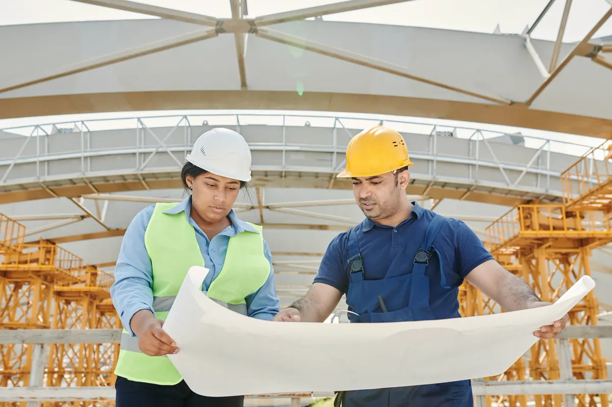
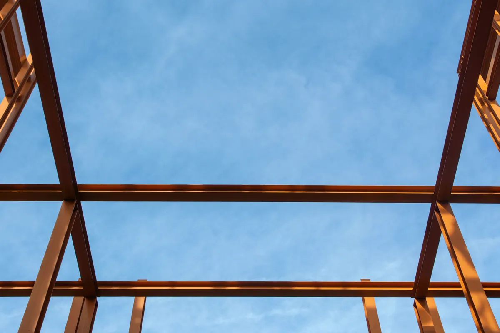
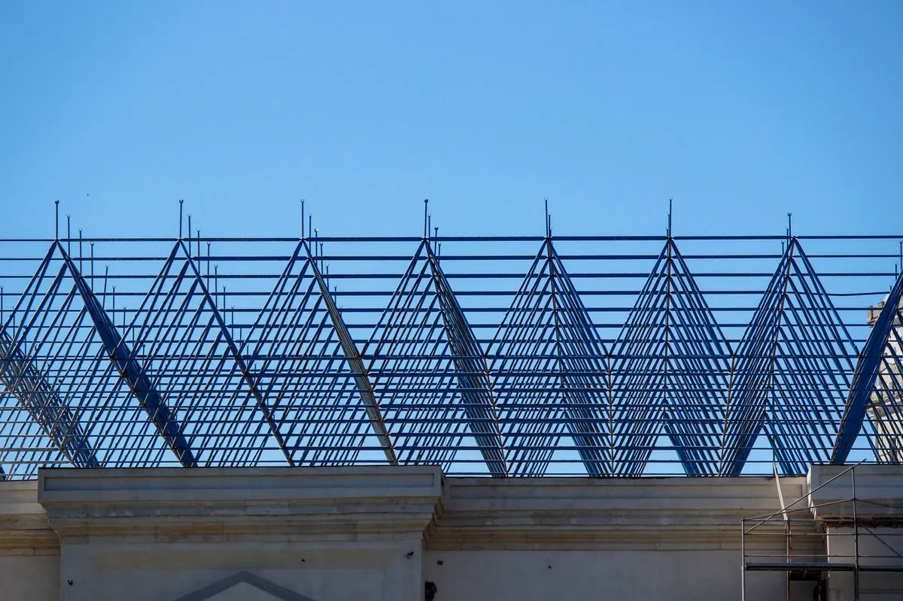

Estrutura metálica com um responsável só, do cálculo à montagem
A Axial Engenharia projeta, fornece o material e monta estrutura metálica para indústrias, centros de distribuição, comércio, escolas, condomínios e clubes em Vitória, Vila Velha, Serra, Cariacica e toda a Grande Vitória. A fabricação das peças fica com o fabricante que você contratar. Você contrata projeto, material e montagem juntos ou só a etapa que falta.
O que mais dá errado em obra metálica é a interface: o projetista calcula, a peça chega com o perfil trocado, o montador descobre que o furo não bate com o chumbador. Aqui o mesmo corpo técnico faz o projeto, especifica o que o fabricante precisa entregar, confere as peças na chegada e monta, com ART de cada etapa.
Recorte desta página: a estrutura em aço. O cálculo em concreto, aço e fundação está em projeto estrutural; a obra civil do galpão (fundação, piso, instalações) em construção de galpões e quadras; pipe rack e bases de máquina em montagem industrial.

Por que contratar a Axial para sua estrutura metálica
Engenharia própria e ART
Engenheiro responsável técnico acompanha a obra, e todo serviço sai com ART registrada no CREA-ES.
Projeto, material e montagem
Projeto, material e montagem com o mesmo engenheiro — ou só a etapa que você precisar. A fabricação fica com o fabricante que você escolher.
Cálculo pelas normas
ABNT NBR 8800 e NBR 14762 para o aço, NBR 6120 para as cargas e NBR 6123 para o vento do litoral.
Proteção contra maresia
Pintura ou galvanização especificada no projeto para ambiente litorâneo, para o fabricante executar e nós conferirmos na chegada.
Peças conferidas antes de montar
Na chegada, conferimos marcação, dimensão, furação e pintura contra o projeto e apontamos a não conformidade antes de a peça subir.
Campo seguro e entrega documentada
Plano de içamento, NR-18 e NR-35 na montagem; entrega com as-built, registros de montagem e ART.
Serviços de estrutura metálica: escolha a etapa
Cada serviço tem página própria com escopo, método e perguntas frequentes.
Fornecimento de aço estrutural
Perfis, chapas, tubos, telhas e fixadores com certificado, conferidos contra o projeto.
Fornecimento de açoMontagem de estrutura pré-fabricada
Estrutura já fabricada ou comprada do fabricante: conferimos as peças na chegada e montamos.
Montagem de estrutura pré-fabricadaMontagem de estruturas metálicas
Içamento planejado, prumo, nivelamento, aperto de parafusos e retoque em campo.
MontagemGalpão metálico
Pórtico, terças, cobertura e fechamento para armazenagem, indústria e comércio.
Galpão metálicoCobertura metálica para quadra
Arco treliçado ou pórtico para quadra de escola, condomínio e clube, ancorado contra o vento.
Cobertura de quadraObra em estrutura metálica: projeto e montagem
Projeto, material e montagem da estrutura, das terças, das telhas e do fechamento, com a fabricação pelo fabricante que você escolher.
Obra: projeto e montagemQual serviço você precisa?
| Sua situação | O que contratar | Onde ver |
|---|---|---|
| Tenho só a ideia e o terreno | Projeto estrutural, material e montagem | Obra: projeto e montagem |
| Preciso de um galpão para armazenagem ou indústria | Galpão metálico: projeto, material e montagem | Galpão metálico |
| Quero cobrir a quadra da escola, do clube ou do condomínio | Cobertura metálica para quadra | Cobertura de quadra |
| Tenho projeto de terceiros e vou contratar o fabricante | Compatibilização do projeto e especificação do que o fabricante deve entregar | Projeto estrutural |
| Já comprei a estrutura pronta do fabricante | Conferência das peças na chegada e montagem | Montagem de estrutura pré-fabricada |
| Só preciso comprar o material certo | Fornecimento de perfis, vigas, tubos e chapas | Fornecimento de aço |
| Preciso só da equipe de montagem | Montagem com plano de içamento, NR-18 e NR-35 | Montagem |
| A estrutura existente está enferrujada | Diagnóstico antes de repintar ou reforçar | Patologias e corrosão |

Estrutura metálica ou concreto: quando o aço compensa
Nem sempre o aço é a resposta. Em edificação baixa, com vãos curtos e sem pressa, o concreto moldado no local costuma ser competitivo. Em galpão, quadra, mezanino e ampliação com a área em uso, o aço tende a ganhar:
| Critério | Estrutura metálica | Concreto moldado no local |
|---|---|---|
| Prazo de obra | O fabricante produz as peças enquanto a fundação é feita; sem cura nem escoramento | Depende de fôrma, escoramento e cura em cada etapa |
| Vão livre | Vence grandes vãos com peso próprio baixo | Pede seções robustas ou protensão em vãos grandes |
| Peso na fundação | Estrutura leve, carga menor no solo — ajuda em terreno aterrado | Estrutura pesada, fundação maior |
| Obra seca e limpa | Pouca água, pouco entulho, menos gente no canteiro | Canteiro úmido, mais entulho e mais mão de obra |
| Ampliação futura | Estrutura parafusada recebe novos módulos sem demolição | Ampliação exige demolição parcial ou junta nova |
| Manutenção | Exige proteção contra corrosão e repintura planejada | Menos manutenção de superfície, atenção a fissuras e armadura |
O contraponto entra no orçamento desde o início: aço exige proteção contra corrosão e, em algumas ocupações, proteção contra incêndio conforme a ABNT NBR 14323 e as exigências do Corpo de Bombeiros.

Tipos de estrutura metálica que executamos
- Pórtico de alma cheia: pilares e vigas em perfil I com ligação rígida. Montagem rápida, poucas peças. Típico de galpão de vão médio e de estrutura com ponte rolante.
- Estrutura treliçada: banzos e diagonais em cantoneira ou tubo. Vence vãos maiores com menos aço. Comum em cobertura de quadra e galpão de grande vão.
- Mezanino metálico: piso elevado dentro de galpão ou loja, calculado para a carga de uso pela NBR 6120, com guarda-corpo e escada no projeto.
- Cobertura metálica: telhado sobre alvenaria, estacionamento ou área de carga. Quem manda é o vento: a ancoragem é dimensionada para a sucção pela NBR 6123.
Perfil laminado, soldado ou formado a frio
| Perfil | Como é feito | Onde costuma entrar | Norma |
|---|---|---|---|
| Laminado | Sai pronto da usina, em bitolas padronizadas (W, HP, U, cantoneira) | Pilares e vigas de pórtico, mezanino, estrutura de piso | ABNT NBR 8800 |
| Soldado | Chapas unidas por solda, com altura e espessura sob medida | Vigas de grande altura, pórticos de vão grande, seção variável | ABNT NBR 8800 |
| Formado a frio | Chapa fina dobrada em U, Z ou U enrijecido | Terças, travessas de fechamento, estrutura leve | ABNT NBR 14762 |
O grau do aço especificado no projeto (ASTM A36, ASTM A572 grau 50, entre outros) é o que tem que chegar na obra, com certificado.

Proteção contra corrosão para o litoral capixaba
Maresia, umidade e poluição industrial colocam a Grande Vitória nas categorias de corrosividade mais altas da ISO 12944. A proteção é definida no projeto, não na hora de pintar: especificamos o que o fabricante precisa entregar e conferimos a pintura na chegada das peças.
- Jateamento abrasivo até o padrão especificado — tinta sobre carepa ou ferrugem descasca.
- Pintura em sistema (fundo, intermediário e acabamento) com espessura especificada para cada demão.
- Galvanização a fogo (ABNT NBR 6323) para peças expostas e tubulares, com ou sem pintura por cima.
- Detalhe construtivo sem bolsões de água, com furos de drenagem e frestas vedadas.
- Fixadores e telhas com revestimento compatível com o da estrutura.
Estrutura existente com ferrugem ou perda de seção pede diagnóstico antes da repintura — veja patologias e corrosão estrutural. A espessura remanescente é medida com ensaios não destrutivos.

Como trabalhamos: etapas e entregáveis
- Contato e levantamento. Você manda finalidade, medidas e local pelo WhatsApp. Entregável: retorno do escopo no mesmo dia útil.
- Proposta por etapa. Projeto, material e montagem separados, para você ver o que está incluso. Entregável: proposta técnica e comercial.
- Projeto estrutural. Cálculo pela NBR 8800 e NBR 14762, cargas pela NBR 6120, vento pela NBR 6123. Entregável: projeto, memória de cálculo, lista de materiais e ART de projeto.
- Detalhamento e material. Desenho peça a peça com o que o fabricante precisa entregar e fornecimento do material conforme a lista. Entregável: desenhos de detalhamento e certificados do aço.
- Conferência na chegada. As peças vêm do fabricante que você contratou; conferimos marcação, dimensão, furação e pintura contra o projeto e apontamos a não conformidade antes de montar.
- Montagem em campo. Chumbadores conferidos por topografia, plano de içamento, NR-18 e NR-35. Entregável: registros de montagem.
- Entrega. Entregável: as-built, plano de manutenção da pintura e ART de execução — ver laudos técnicos e ART.
Tem uma estrutura metálica para orçar?
Mande a finalidade, as medidas e a cidade da obra. Retornamos com o escopo no mesmo dia útil.
O que mandar para receber o orçamento
- Finalidade da obra: galpão, quadra, mezanino, cobertura, ampliação.
- Medidas aproximadas: largura, comprimento e altura livre.
- Endereço ou bairro e cidade do terreno.
- Cargas especiais: ponte rolante, mezanino, painel solar.
- Fotos do local e, se houver, projeto arquitetônico, projeto estrutural ou sondagem.
- Etapas que você quer contratar: projeto, material e montagem juntos ou só uma delas — e se você já tem fabricante ou estrutura comprada.
Enviar as informações pelo WhatsApp
Perguntas frequentes sobre estrutura metálica
Quanto custa uma estrutura metálica?
Não passamos preço por metro quadrado sem ver a obra, porque o custo depende do vão, da altura, das cargas, do vento no local, do tipo de perfil, da proteção contra corrosão e da fundação. Com a finalidade, as medidas e a localização, retornamos com o escopo e montamos a proposta por etapa. Na comparação com o concreto, o aço tende a compensar em galpão, quadra e mezanino pelo vão livre, pela fundação mais leve e pelo prazo menor de canteiro.
Qual o prazo de uma obra em estrutura metálica?
Depende do tamanho da obra e das etapas contratadas, e o prazo sai na proposta depois do levantamento. O que encurta a obra metálica é que o fabricante escolhido por você produz as peças enquanto a fundação é executada: quando o terreno fica pronto, a estrutura chega pronta para conferirmos e montarmos, sem espera de cura nem escoramento.
Já tenho projeto ou já comprei a estrutura. Vocês só montam?
Sim. Quando o projeto é de terceiros, fazemos a compatibilização antes de a estrutura ir para o fabricante, conferindo perfis, ligações e chumbadores. Quando a estrutura já foi comprada, conferimos as peças na chegada e montamos. Também atendemos só o projeto estrutural, só o fornecimento de material ou projeto, material e montagem juntos.
Vocês emitem ART?
Sim. Todo serviço tem engenheiro responsável técnico e ART registrada no CREA-ES, de projeto e de execução conforme as etapas contratadas.
Vocês atendem a minha cidade?
A sede fica em Vila Velha e atendemos toda a Grande Vitória: Vitória, Vila Velha, Serra, Cariacica, Viana, Guarapari e Fundão, além de cidades como Anchieta, Aracruz e Linhares.
Vocês fazem obra pequena, como mezanino ou ampliação?
Sim. Mezanino, cobertura de garagem ou área de carga e ampliação de galpão existente estão no escopo. Na ampliação, verificamos antes a estrutura existente, os perfis, as ligações e se ela suporta as cargas novas, inclusive o vento sobre a parte ampliada.
Qual a garantia da estrutura metálica?
Nas obras que executamos, respondemos pela solidez e segurança da construção por cinco anos, como determina o art. 618 do Código Civil. Na entrega, deixamos o plano de manutenção da pintura, que é o que mantém a proteção contra corrosão ao longo do tempo.
Estrutura metálica na Grande Vitória
Projeto, material e montagem para indústria, comércio, escolas e condomínios da região:
Continue lendo
- Estrutura metálica para laje: vigas e steel deck
- Sobrado em estrutura metálica
- Mezanino metálico em galpão, loja e casa
- Tipos de treliça, perfis e aços estruturais
- Galpão metálico: vão, altura e cobertura
- Cobertura metálica para quadra poliesportiva
- Montagem de estrutura pré-fabricada
- Montagem de estruturas metálicas em campo
- Obra em estrutura metálica: projeto e montagem
- Projeto estrutural em aço, concreto e fundação